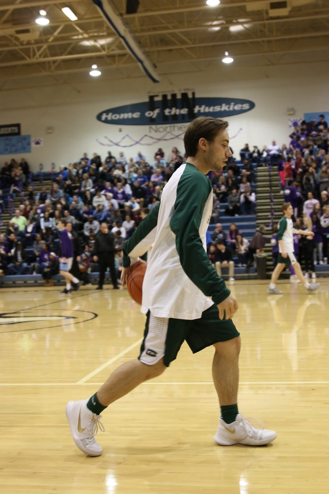

It was reshmen year of high school, post homecoming dance at what was deemed an "afterparty" but was more kin to an icebreaker activity at a team retreat. I was messing around with a deck of cards convincing my friend I knew magic. I had him pick a card and return it to the deck while I worked a miracle to try and find it. I reshuffled the deck, threw erroneous cards on the ground and stopped at what felt like the right card. I picked out this card and threw it like a ninja star and it landed completely upright in the nearby refrigerator's ice machine. It was the right card, a complete guess, but the crowd had their jaws on the floor. The eight wonder of the world.
Biography

Professional Life
I am Matis Butlevics, author, student, son, brother, and future father. I grew up in Grand Rapids, Michigan, and attend Michigan State University. I am studying supply chain management with a minor in information systems and will be working in Chicago next year for a consulting firm.
Personal Life
Author playing basketball

- I have many loves and passions, including:
- Chess
- Long walks
- Sports
- Family
- Friends
As a child, I played basketball and baseball and was extremely competitive. My family and I would go on vacation once a year and I got to see many states and cities. My favorite vacation was when I was in 6th grade and we went to Myrtle Beach, South Carolina. We enjoyed great food, great weather, and a great view. I hope to one day be able to travel even more and see what the world has to offer.